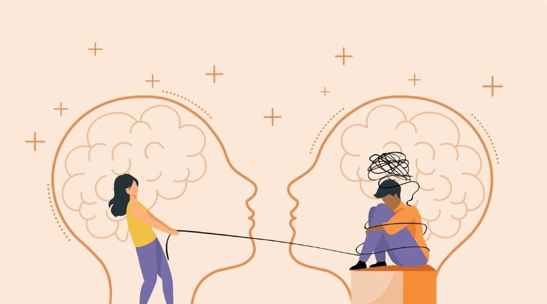
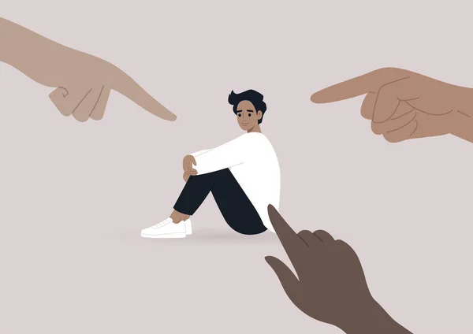
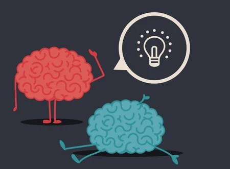

La película cuenta la historia del joven Michael Oher de 17 años,quien ha pasado la mayor parte de su infancia bajo la custodia de diferentes familias.
Los problemas de drogadicción de la madre de Michael le han obligado a vivir con una familia distinta cada cierto tiempo, pero siempre que se le coloca en un nuevo
hogar se termina escapando.En su nueva escuela Michael entabla amistad con Sean Jr. (SJ). La madre de SJ, Leigh Tuohy es una diseñadora de interiores con un
carácter muy fuerte.Una noche la señora Leigh ve a Michael caminando por la calle, temblando de frío bajo la lluvía.Cuando se entera de que él tiene la intención de
pasar la noche en la calle, ella le ofrece un lugar para dormir en su casa y esto es el inicio de una gran relación. Poco a poco, Michael se convierteen un miembro más
de la familia Tuohy.Apesar de todos los stigmas que se presentan solo por el ser una persona de color,definitivamente una pelicula de superación,autocontrol,empatía
como tambien de suposiciones,lucha y el toro Ferdinando.

La empatía hace que las personas se ayuden entre sí esta muy relacionada
con el altruismo,el amor, preocupación por los demás y la capacidad de ayudar.
se expone muy bien en esta película ya que por ejemplo la Señora Leigh analiza la
situación en la que se encuentra Michael y sin dudar le pide que se quede en su casa
para que no pase frío, pero si se examina a fondo existen muchos más ejemplos en la
misma película de la empatía.
Consiste en gestionar nuestros sentimientos y comportamientos para controlar tanto
las emociones positivas como las negativas y así poder expresarlas de manera
adecuada. Sin embargo, para mejorar el autocontrol emocional es fundamental
desarrollarla como Michael que contra burlas o "bromas"se mantiene en un estado
calmo o también la Señora Leigh que en vez de perder el control responde a las
críticas de manera inteligente.
La superación es el proceso de evolución y transformación que experimenta
una persona al adoptar nuevos hábitos, formas de pensar y cualidades que
permiten alcanzar metas y desarrollar todo el potencial en diversos ámbitos de
la vida como con Michael que experimenta un proceso de avance personal que
le permite a el obtener más conocimientos a pesar de que en un principio no
tuviera el valor de hablar o también a la hora de aprender a leer y escribir entre
muchos más.

El Stigma es la asociación de estereotipos negativos a una "marca", los
comportamientos que se muestran hacia una persona que presenta esa "marca" como
por ejemplo la clase de prejuicio y discriminación, que se sabe que la gente de color
experimenta o también por el lugar de vivencia o el estado económico, y en está
película se presentan este Stigma como se expone en los pensamientos de las
"amigas" de la Señora Leigh contra Michael y las personas de color o también por
el barrio de proveniecia de él.
Haga click en el enlace
Las suposiciones implican hacer conjeturas basadas en la evidencia que tenemos, para
llegar a una conclusión que damos por echa , aunque hay muchas posibilidades de
que no lo sea.Asumimos muchas cosas, pero no somos conscientes de la influencia de
esas suposiciones en nuestra vida en esta película se puede ver muy claramente un
ejemplo de lo mismo, ya que después de que la investigadora hablara con Michael el
supone que sus padres quieren que él vaya a una universidad en específico ya que
ellos y su maestra hicieron el plan para que el eligiera esa universidad, que solo lo
ayudaron para que él fuera ahí y tomar provecho a un que su suposicion fuera errónea
porque a un que sí querían que fuera a esa universidad nunca quisieron lastimarlo y
que pensara que sólo lo usaban para beneficio.
El Toro Ferdinando es una muy buena representacion de Michael y es una referencia muy bonita la que tienen los dos.
Haga click en el enlace

Esta pelicula es una muy buena representacion de las actitudes
que deberiamos aplicar y a la vez demuestra todas las fasetas del
desarrollo tanto emocianal como social de los protagonistas,
como nada es imposible y que siempre existen personas buenas que
va a intentar ayudar, a un que allan muchas dificultades
Siempre hay que tener una vision positiva.

Toda la informacion tiene ©